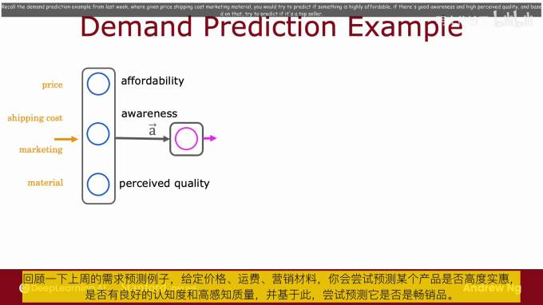
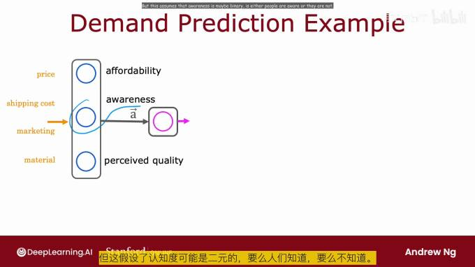
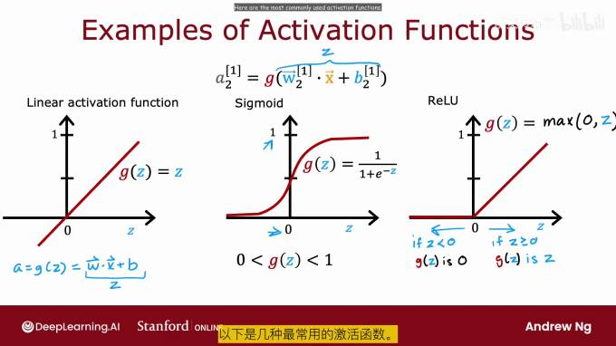

00:02到目前为止，我们在所有节点中，在隐藏层和输出层中，都一直使用着 sigmoid 激活函数。
00:12我们最初这样做，是因为我们是通过逻辑回归，创建大量逻辑回归单元并将它们串联起来，来构建，神经网络的。
00:24但如果你使用其他激活函数，你的神经网络可以变得强大得多。
00:30我们来看看如何做到这一点。
00:33回顾一下上周的需求预测例子，给定价格、运费、营销材料，你会尝试预测某个产品是否高度实惠，是否有良好的认知度和高感知质量，并基于此，尝试预测它是否是畅销品。

00:50但这假设了认知度可能是二元的，要么人们知道，要么不知道。

00:58但似乎潜在买家对你所售 T 恤的认知程度可能不是二元的。
01:06他们可能有一点点认知、有一定认知、极度认知，或者它可能已经彻底病毒式传播了。
01:17所以，与其将认知度建模为一个二元数字，零或一，并试图估计认知度的概率。
01:18所以，与其将认知度建模为一个二元数字，零或一，并试图估计认知度的概率，或者与其将认知度仅建模为一个介于零和一之间的数字，也许认知度应该是任何非负数，因为认知度可以有任何非负数值，从零一直到非常非常大的数字。
01:26或者与其将认知度仅建模为一个介于零和一之间的数字，也许认知度应该是任何非负数，因为认知.度可以有任何非负数值，从零一直到非常非常大的数字。
01:42因此，以前我们曾用这个方程来计算第二个隐藏单元的激活值，即估计认知度，其中 g 是函数，因此取值在零和一之间。n。
01:58如果你想允许 A 二能取到更大的正值，我们可以换用不同的激活函数。
02:10事实证明，神经网络中一个非常常见的激活函数选择是这个函数。
02:18它是这样的，如果 z 是这个，那么 g (z)在左侧是零，然后在零的右侧是一条呈四十五度角的直线。
02:31所以当 z 大于等于零时，g （z)就等于 z。
02:43它的数学方程是：g（z)等于零和 z 中的最大值。
02:50你可以自行验证一下，零和 z 的最大值是否就得出了我在这里画出的这条曲线。
03:02如果 A 一二等于这个 Z 值的 G（Z)，那么激活值 A 现在可以取零或任何非负数。
03:17它叫做 ReLU，大小写有点特别。
03:22ReLU 代表的是，同样一个有点晦涩的术语，但它代表修正线性单元。
03:29不用太纠结“修正”是什么意思，或者“线性单元”是什么意思。
03:36这只是作者当初提出这个特定激活函数时给它起的名字。
03:42但深度学习领域的大多数人就直接说 ReLU 来指代这个 G (Z)。
03:49更一般地说，对于 G（Z)用什么，你是有选择的。
03:54有时我们会选用不同于 sigmoid 激活函数的选项。
03:59以下是几种最常用的激活函数。

04:04你见过 sigmoid 激活函数，g （z）等于这个 S 形函数。
04:11上一张幻灯片，我们刚看了 ReLU，也就是修正线性单元，g（z)等于零和 z 的最大值。
04:22还有另一个值得一提的激活函数，叫做线性激活函数，它就是 g（z)等于 z。
04:32有时如果你使用线性激活函数，人们会说我们没有使用任何激活函数，因为如果 a 等于 g (z)，而 g(z)等于 z，那么 a 就等于这个，比如 w 点乘 x 加 b。i。
04:48因此，这就好像里面根本没有 g 一样。
04:52所以当你使用这个线性激活函数 g（z）时，有时人们会说，嗯，我们没有使用任何激活函数。
05:00尽管在本课程中，我会称之为使用线性激活函数，而不是没有激活函数。
05:08但如果你听到别人使用那种说法，那就是他们的意思。
05:16这三种可能是神经网络中迄今为止最常用的激活函数了。
05:24本周晚些时候，我们将涉及第四种，叫做 softmax 激活函数。
05:30但有了这些激活函数，你将能构建出丰富多样且强大的神经网络。
05:38那么，在构建神经网络时，对于每个神经元，你是想用 sigmoid 激活函数，还是 ReLU 激活函数，或是线性激活函数呢？
05:49你如何在这些不同的激活函数之间做出选择呢？
05:54我们下个视频再来探讨。
05:54我们下个视频再来探讨。